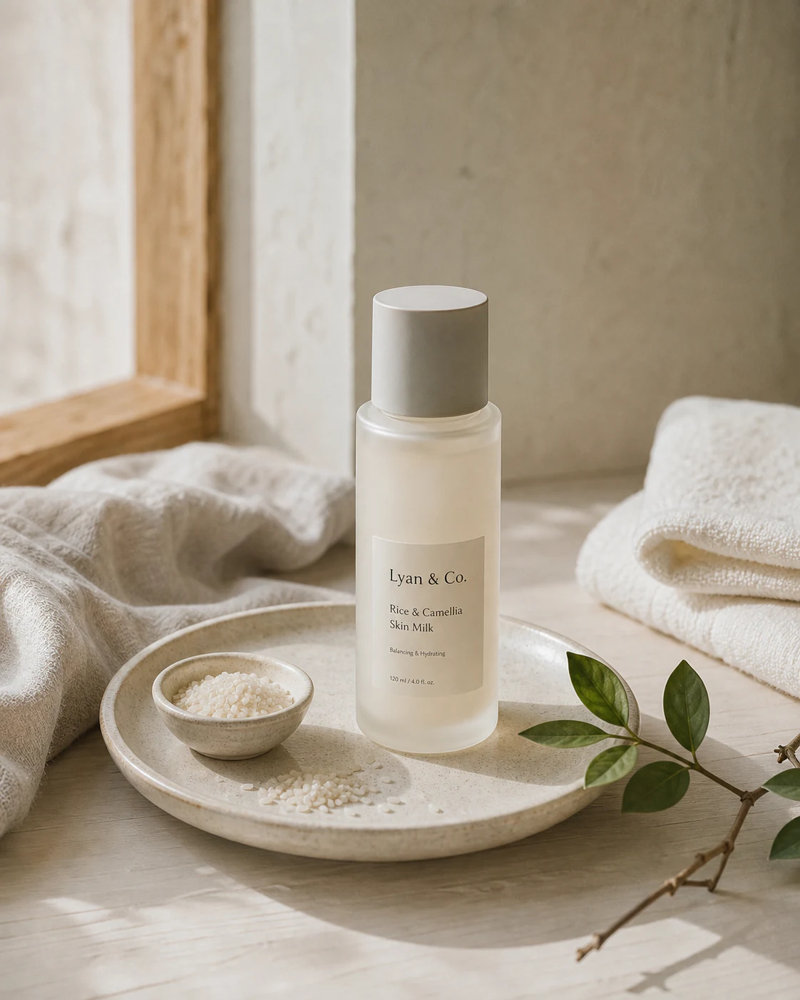
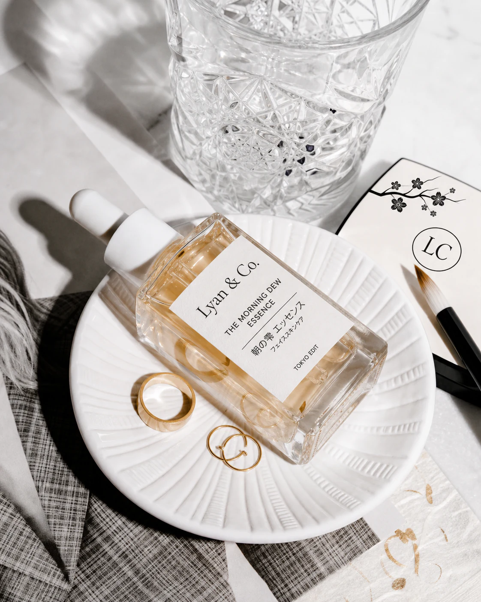

K-Beauty edit
Centella Daily Routine
Soothing care · Daily routine
A straightforward routine focused on hydration, comfort and everyday use.
Curated Korean & Japanese skincare
Simple. Effective. Thoughtfully selected.

Our approach
We do not try to offer everything. We select a small number of Korean and Japanese beauty products that we genuinely recommend.
The selection
A first edit prepared for future inventory. Product brands and exact availability will be confirmed before ordering.
K-Beauty edit
Soothing care · Daily routine
A straightforward routine focused on hydration, comfort and everyday use.

J-Beauty edit
Essence · Lightweight hydration
A simple care step inspired by Japanese textures and restrained routines.

Lyan & Co. routine
Routine guidance · Personal selection
A concise morning routine assembled around your preferences and daily rhythm.
K-Beauty
Korean skincare is often known for thoughtful textures and layered routines. Our edit keeps the useful steps and leaves out the noise.
J-Beauty
Japanese beauty favours consistency, elegant textures and products that fit naturally into everyday life.
Routines
Start with a few useful steps. Add only what serves your skin and your habits.
Tell us what you currently use and what kind of routine you can maintain.
Ask Lyan & Co.Journal
Short guides on routines, ingredients and Korean and Japanese beauty culture.

Begin with consistency, not complexity.
A calm introduction to a familiar K-Beauty ingredient.

What Korean and Japanese care can teach us about repetition.
Direct contact
For product details, current availability or help choosing a simple routine, contact Lyan & Co. directly.